Real Estate Photography in Whitesboro, NJ: 114 E Anna St
About this Whitesboro listing shoot
Listing Pixl provided professional real estate photography for this Whitesboro, New Jersey property at 114 E Anna St 08210. A white ranch home on a wooded Whitesboro lot, photographed inside and out with drone views over the fall trees. The shoot was booked by Jason Ruffenach of eXp Realty to give the listing scroll-stopping photos for the MLS, Zillow, and social media.
This white ranch home on E Anna St in Whitesboro sits on a freshly graded lot ringed by trees in full fall color, with a covered front porch and wood railings. Inside, the shoot covered the open kitchen with white shaker cabinets, black hardware, a chandelier and a sliding glass door, along with the entry hall, bright bedrooms with ceiling fans and two bathrooms. The drone captured the house from the front and straight overhead, showing the cleared lot and the streets around it.

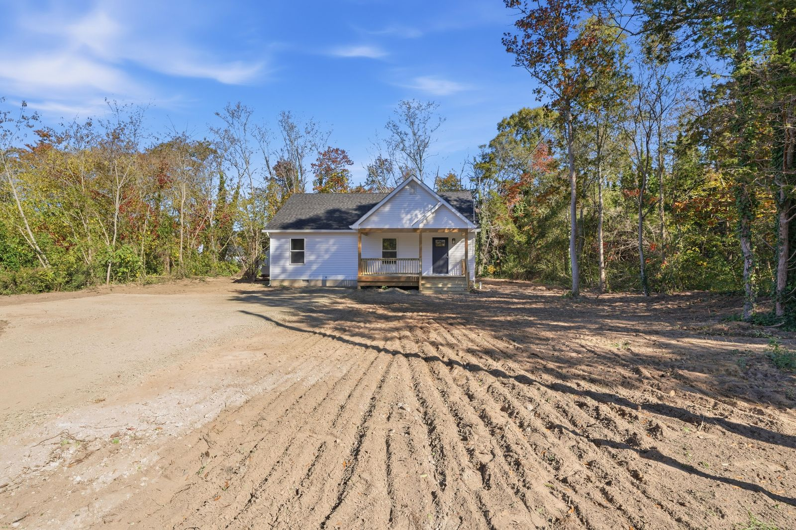

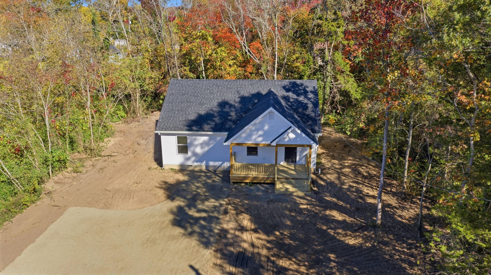

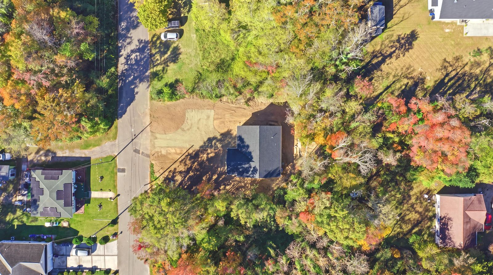

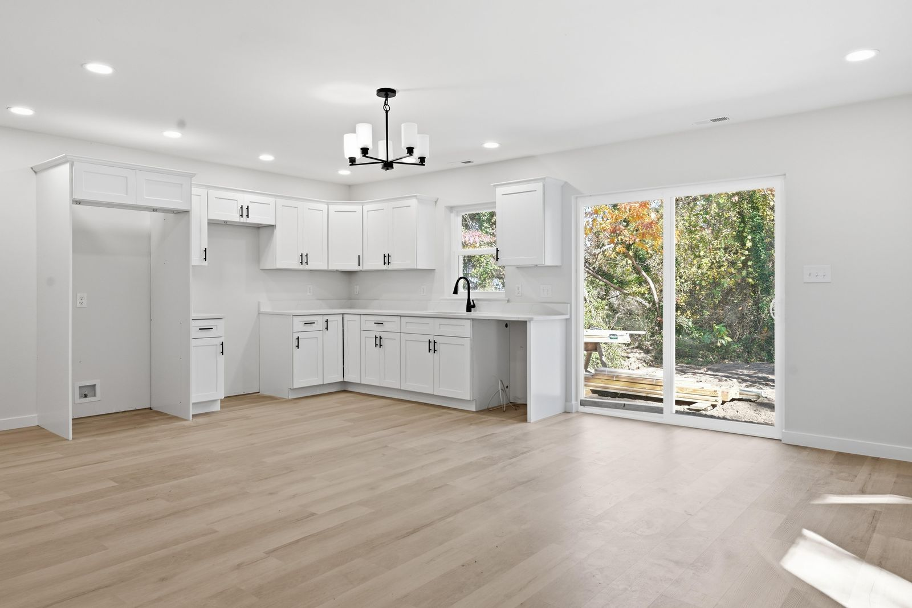

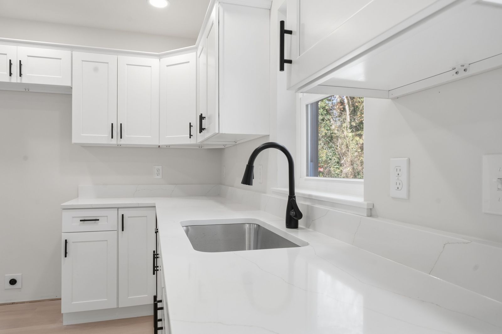

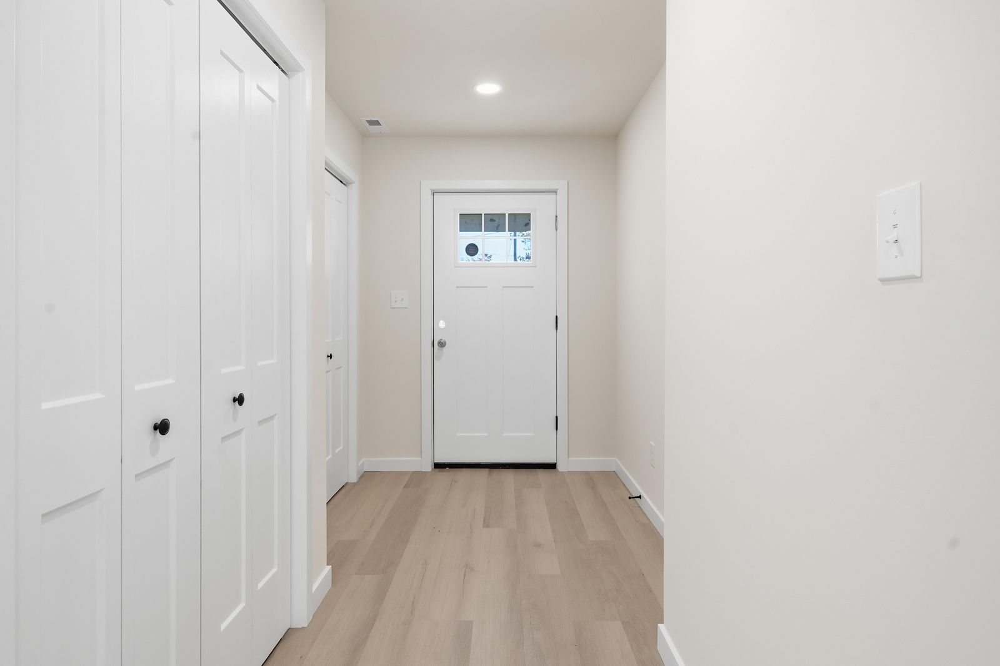

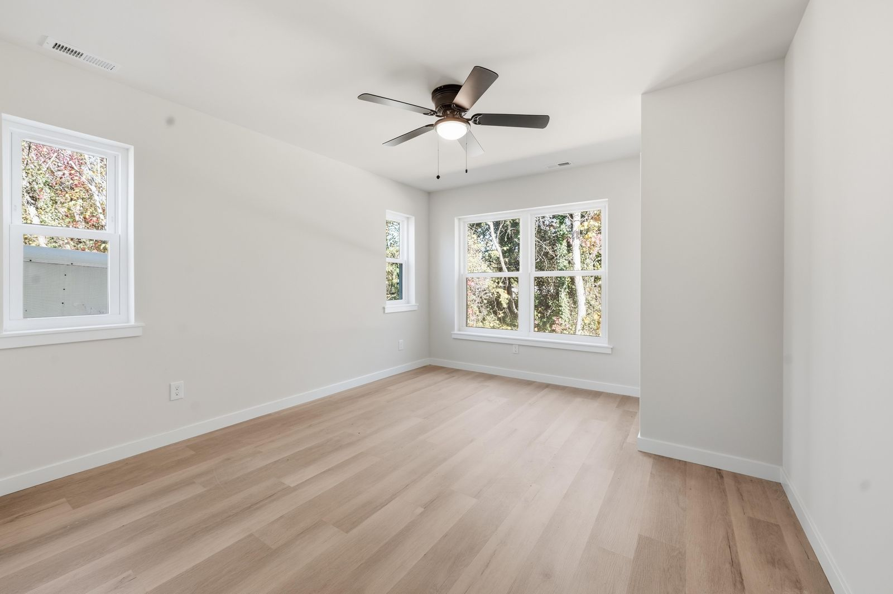

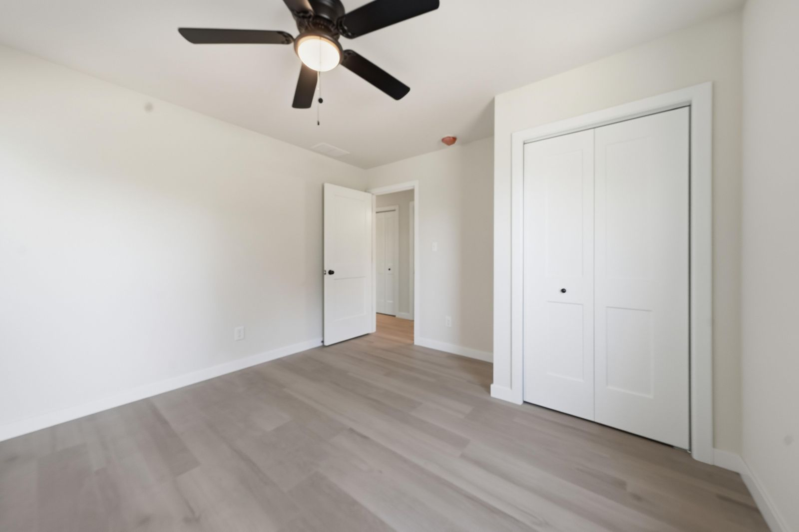

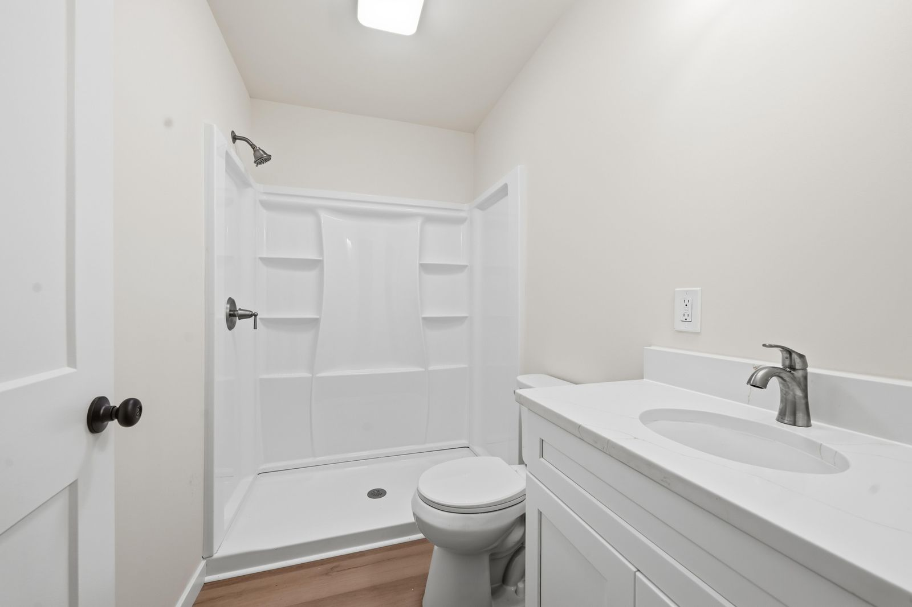

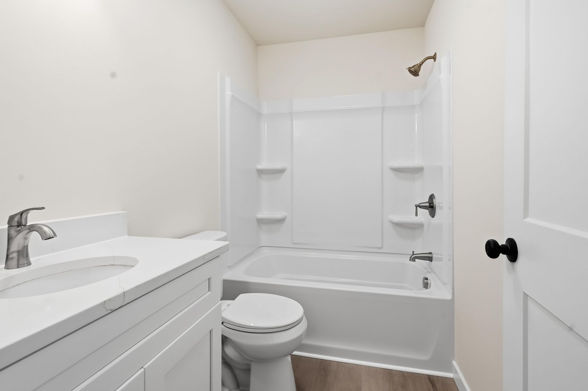

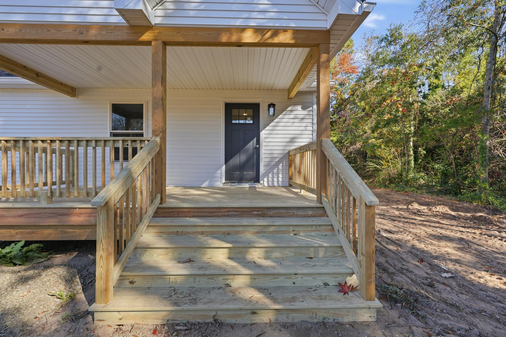

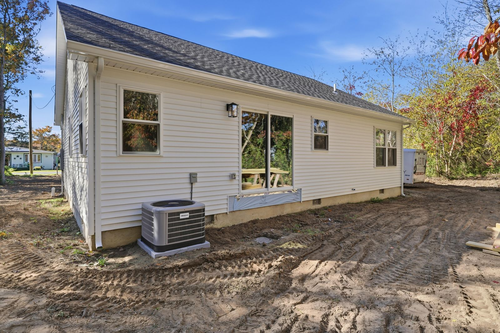
What we photographed
- Front exterior and covered porch
- Drone and top-down aerials with fall color
- White shaker kitchen with sliding glass door
- Bedrooms with ceiling fans and big windows
- Two bathrooms, one shower and one tub
Real estate photography services delivered
This Whitesboro NJ shoot included HDR listing photography with professional editing and color correction, delivered next-day and sized ready for the MLS. Drone aerial photography showed the lot, the setting, and the surrounding Whitesboro neighborhood — the views that make South Jersey listings stand out online.
Real estate photography in Whitesboro, NJ
Whitesboro is a small, tree-lined community in Middle Township, just off Route 9 between Cape May Court House and Rio Grande, founded in the early 1900s by former Congressman George Henry White. Homes here often sit on deep, wooded lots, so drone shots that show the land, the tree line and the quiet side streets help buyers understand what they are getting. Bright, clean interior photos round it out for buyers comparing year-round homes across the county.
See packages, FAQs and every shoot in town on our Whitesboro, NJ real estate photographer page.
More shoots near Whitesboro
Lock In a Whitesboro, NJ Real Estate Photographer
Selling in Whitesboro or anywhere in Cape May County? Listing Pixl shoots across Whitesboro, Burleigh, Rio Grande, Cape May Court House, Wildwood, Villas, and surrounding South Jersey towns. Packages from $295. Call or text (609) 780-7027 or lock in your shoot online.